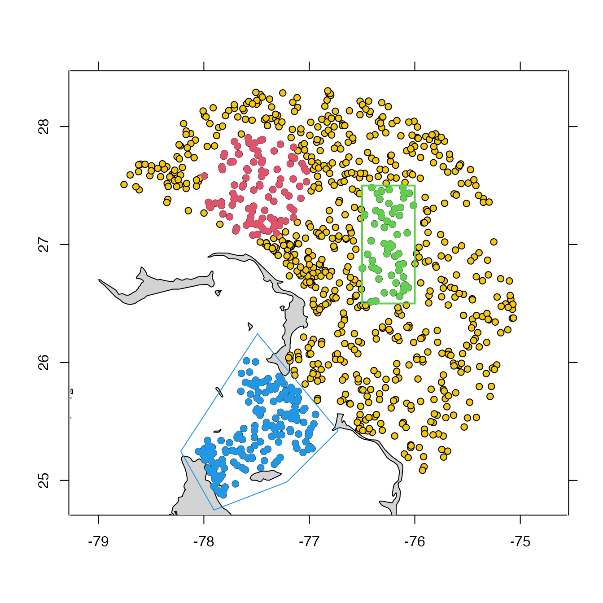

Return a subset of an argoFloats for two object types:
A) type "index", as created by getIndex(), either by specifying indices
to keep (using the subset argument) or by specifying a way to determine
those indices (using the ... argument). Note that only one subset condition
may be given in the ... argument, but that merge,argoFloats-method() can
be used to merge indices created by subset, which effectively creates a
logical "or" operation.
B) type "argos", as created by readProfiles(). Note that the only subset
condition that can be give in the ... argument is profile,cycle, or
dataStateIndicator for argos type.
# S4 method for argoFloats subset(x, subset = NULL, ...)
| x | an |
|---|---|
| subset | optional numerical or logical vector that indicates which
indices of |
| ... | the first entry here must be either (a) a list named |
An argoFloats object.
The possibilities for the ... argument are as follows.
An integer vector giving indices to keep. See example 1.
A list named circle with numeric elements named longitude,
latitude and radius. The first two give the center of
the subset region, and the third gives the radius of
that region, in kilometers. See example 2.
A list named rectangle, which has elements named
longitude and latitude, two-element numeric vectors
giving the western and eastern, and southern and northern
limits of the selection region. See example 3.
A list named polygon that has elements named longitude and latitude
that are numeric vectors specifying a polygon within which profiles
will be retained. The polygon must not be self-intersecting,
and an error message will be issued if it is. If the polygon is not closed
(i.e. if the first and last points do not coincide) the first point is pasted
onto the end, to close it.
See example 4.
A vector or list named parameter that holds character values that
specify the names of measured parameters to keep. See section 3.3 of the
Argo User's Manual, V3.3 (Carval et al. 2019) for a list of parameters.
See example 5.
A list named time that has elements from and to that are either
POSIXt times, or character strings that subset() will convert to
POSIXt times using as.POSIXct() with tz="UTC". See example 6.
A list named institution, which holds a single character element that
names the institution. The permitted values are:
"AO" for AOML, USA;
"BO" for BODC, United Kingdom;
"CS" for CSIRO, Australia;
"HZ" for CSIO, China Second Institute of Oceanography;
"IF" for Ifremer, France;
"IN" for INCOIS, India;
"JA" for JMA, Japan;
"KM" for KMA, Korea;
"KO" for KORDI, Korea;
"ME" for MEDS, Canada; and
"NM" for NMDIS, China.
See example 7.
A list named deep that holds a logical value indicating weather argo floats
are deep argo (i.e. profiler_type 849, 862, and 864). See example 8.
A list named ID that holds a character value specifying a float identifier.
See example 9.
A list named ocean, which holds a single character element that names the
ocean. The permitted values are:
"A" for Atlantic Ocean Area, from 70 W to 20 E,
"P" for Pacific Ocean Area, from 145 E to 70 W, and
"I" for Indian Ocean Area, from 20 E to 145 E.
See example 10.
A character value named dataMode, equal to either realtime or delayed,
that selects whether to retain real-time data or delayed data.
See example 11.
An integer value named cycle that specifies which cycles are to be retained.
This is done by regular-expression matching of the filename, looking between the
underline character ("_") and the suffix (.nc), but note that the expression
is made up of a compulsory component comprising 3 or 4 digits, and an optional
component that is either blank or the character "D" (which designates a
descending profile). Thus, 001 will match both *_001.nc and *_001D.nc.
Note this can be used for both "index" and "argos" types.
See example 12.
A character value named direction, equal to either "descent" or "ascent",
that selects whether to retain data from the ascent or decent phase.
See example 13.
An integer value named profile, that selects which profiles
to obtain. Note that this type of subset is possible for argos and index
type objects.
See example 14.
A integer value named debug that controls whether subset() prints
some information to describe what it is doing.
A character value named dataStateIndicator, equal to either "0A", "1A",
"2B", "2B+", "2C", "2C+", "3B", or "3C", that selects which dataStateIndicator
to keep. See table 6 of the Argo User's Manual, V3.3 (Carval et al. 2019) to
understand the processing stage of data.
See example 16.
In all cases, the notation is that longitude is positive for degrees East and negative for degrees West, and that latitude is positive for degrees North and negative for degrees South.
Carval, Thierry, Bob Keeley, Yasushi Takatsuki, Takashi Yoshida, Stephen Loch Loch, Claudia Schmid, and Roger Goldsmith. Argo User’s Manual V3.3. Ifremer, 2019. https://doi.org/10.13155/29825.
Dan Kelley and Jaimie Harbin
library(argoFloats) data(index) # Example 1: subset to the first 3 profiles in the (built-in) index index1 <- subset(index, 1:3)#>#> First 3 longitudes: -76.231 -76.024 -76.32# Example 2: subset to a circle near Abaca Island index2 <- subset(index, circle=list(longitude=-77.5, latitude=27.5, radius=50))#># Example 3: subset to a rectangle near Abaca Island lonRect <- c(-76.5, -76) latRect <- c(26.5, 27.5) index3 <- subset(index, rectangle=list(longitude=lonRect, latitude=latRect))#># Example 4: subset to a polygon to near Abaco Island poly <- list(longitude=c(-77.492, -78.219, -77.904, -77.213, -76.728, -77.492), latitude=c(26.244, 25.247, 24.749, 24.987, 25.421, 26.244)) index4 <- subset(index, polygon=poly)#># Example 5: subset synthetic data containing "DOXY" parameters # Data containing "DOXY" data data(indexSynthetic) index5A <- subset(indexSynthetic, parameter="DOXY")#># Data containing both "PSAL" and "DOWN_IRRADIANCE380" data data(indexSynthetic) index5B <- subset(indexSynthetic, parameter=c("PSAL", "DOWN_IRRADIANCE380"))#># Example 6: subset data for the year 2019 data(index) index6 <- subset(index, time=list(from="2019-01-01", to="2019-12-31"))#>#># Example 8: subset to a specific ID if (FALSE) { ai <- getIndex(filename="synthetic") index9 <- subset(ai, ID="1900722")} # Example 9: subset data to only include deep argo if (FALSE) { ai <- getIndex(filename="synthetic") index8 <- subset(ai, deep=TRUE)} # Example 10: subset data by ocean if (FALSE) { ai <- getIndex() index10 <- subset(ai, circle=list(longitude=-83, latitude=9, radius=500)) plot(index10, which="map") atlantic <- subset(index10, ocean="A") # Subsetting for Atlantic Ocean pacific <- subset(index10, ocean="P") points(atlantic[["longitude"]], atlantic[["latitude"]], pch=20, col=2) points(pacific[["longitude"]], pacific[["latitude"]], pch=20, col=3)} # Example 11: subset by delayed time if (FALSE) { data(indexBgc) index11 <- subset(indexBgc, dataMode="delayed") profiles <- getProfiles(index11) argos <- readProfiles(profiles) oxygen <- argos[["oxygen"]][[3]] pressure <- argos[["pressure"]][[3]] plot(oxygen, pressure, ylim=rev(range(pressure, na.rm=TRUE)), ylab="Pressure (dbar)", xlab="Oxygen (umol/kg)")} # Example 12: subset by cycle if (FALSE) { data(index) index12 <- subset(index, cycle="124") cat("File names with cycle number 124:", paste(index12[["file"]]), "\n")} # Example 13: subset by direction if (FALSE) { library(argoFloats) index13A <- subset(getIndex(), deep=TRUE) index13B <- subset(index13A, direction="descent") head(index13B[["file"]])} # Example 14: subset by profile (for argos type) if (FALSE) { library(argoFloats) index14A <- subset(getIndex(filename="synthetic"), ID="5903889") index14B <- subset(index14A, cycle="074") argos14A <- readProfiles(getProfiles(index14B)) argos14B <- subset(argos14A, profile=1) D <- data.frame(Oxygen = argos14A[["oxygen"]], col1= argos14B[["oxygen"]][[1]])} # Example 15: subset by cycle (for argos type) to create TS diagram if (FALSE) { data("index") index15 <- subset(index, ID="1901584") profiles <- getProfiles(index15) argos <- readProfiles(profiles) plot(subset(argos, cycle="147"), which="TS")} # Example 16: subset by dataStateIndicator if (FALSE) { data("index") index16 <- subset(index, 1:40) argos <- readProfiles(getProfiles(index16)) argos16A <- subset(argos, dataStateIndicator="2C") argos16B <- subset(argos, dataStateIndicator="2B")}